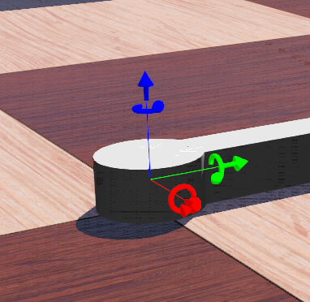
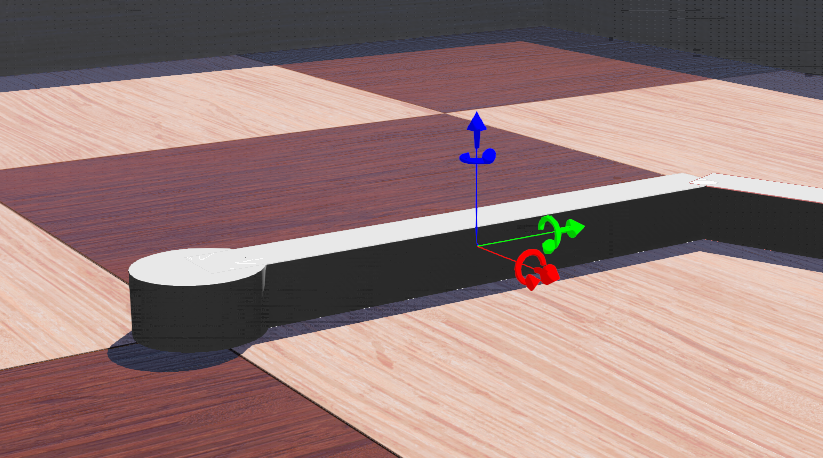

Plotter <<
Previous Next >> left_motor
coord
座標系統 (Coordinate):
Robot 的座標原點位於 (0, 0, 0) 也就是其 z 軸緊貼地面。

left_motor Solid 初始建立時與 Robot 座標相同，但建立幾何形體時座標原點是位於圓柱體的質心 (也就是有一半的圓柱體位於地板下)，為了讓高 0.02m 的圓柱體底部能夠站在地板上，因此 left_motor Solid 剛體在 z 軸正向平移 0.01m。

joint1 HingeJoint 建立時，其座標系統與 Robot 相同 (因為是 Robot 的 children 中的子節點)。
但 joint1 端點的 link1 Solid 因為長度為 0.2m，高與寬為 0.02m，初始建立剛體 (Solid) 時，其座標系統與 Robot 相同，但因為其底部必須站在地板上，因此也要跟 left_motor Solid 剛體相同，在 z 軸正向平移 0.01m (即其高度的一半)，然後還要在 y 軸正向平移其長度的一半 (即 0.1m) 才能讓 link1 的下方末端與 joint1 旋轉軸中心點 (即 Robot 原點) 對齊。
當 link1 完成定位後，其座標原點已經移動到質心的位置，所以隨後的 joint2 建立時的旋轉中心座標系統，就是依照 link1 質心的座標系統計算，也就是 joint2 的 anchor (即軸的旋轉中心座標) 設定為 (0, 0.1, 0) 的原因。

之後接在 joint2 上的 link2，因為不像 link1 的起始角度，故意設為與水平位置垂直 (即 x 與 y 軸方向可以獨立平移)，因此在建立展示幾何形體之前，必須先加上一個 Pose 節點，才能在兩個座標系統的平移與旋轉配合下，將 link2 擺到五軸繪圖機一開始所設定的初始方位。
Plotter <<
Previous Next >> left_motor